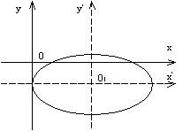

П 9 № 2
Привести уравнение к каноническому
виду и построить кривую.
РЕШЕНИЕ
СгруПируем члены этого уравнения, содержащие одноименные
координаты:
, или .
Дополняем члены в скобках до полных квадратов:
, или .
Обозначаем ,  , , , то есть точка – центр кривой.
, , , то есть точка – центр кривой.
, , , то есть точка – центр кривой.Уравнение в новой системе координат принимает вид:
и определяет эллипс с полуосями , , который в исходной системе
координат имеет центр в точке .
